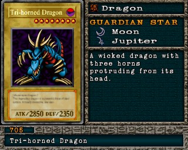

#705 · Monstro
Tri-horned Dragon
ATK2850
DEF2350
Nível8
TipoDragão
AtributoDark
Guardian StarsLua / Júpiter
Monstro de ritual: use #680 Curse of Tri-Horned Dragon com Feral Imp, Torike, B. Dragon Jungle King.
Quem dropa no Mod 13
| Duelista | Rank | Chance | Média | |
|---|---|---|---|---|
| S/A-POW | 1,37% 28/2048 | 1 em 73 duelos | ||
| S/A-POW | 1,22% 25/2048 | 1 em 82 duelos | ||
| S/A-POW | 1,12% 23/2048 | 1 em 89 duelos |
Quem dropa no jogo original
Não dropa de nenhum duelista no jogo original.
A chance vale por duelo vencido com o rank indicado. "1 em N" é a média de duelos para conseguir a carta. S/A-POW = vitória por força; S/A-TEC = vitória técnica; B/C/D = ranks baixos.